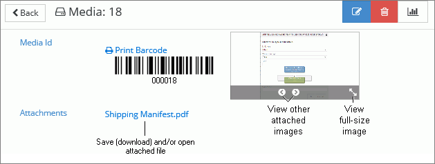

On the Media tab, double-click the media of interest or click the corresponding .
To view an attached image, point to the image and use the image taskbar buttons available for viewing, as shown in the figure below.

Depending on your browser and its security settings, you may be able to save an attached image. Following is one Internet Explorer method:
-
Ensure the image to be saved is visible in the image area.
-
Right-click the image and select Save picture as.
-
Complete the Save Picture dialog box and click Save.
Depending on your browser and its security settings, you may be able to open and/or save an attached file:
-
-
If your browser is configured to prompt you before opening and/or downloading files, follow the prompt as needed.
|
|
Note: Refer to your browser documentation and/or check with your IT Department for details on security and/or download settings. |